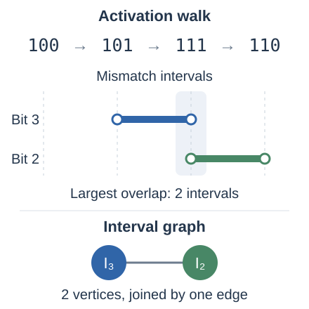

Overview
A neural network can send a straight input segment through a sequence of activation patterns that moves away from the starting pattern and then turns back towards it. Our earlier space-folding work measures this behaviour using the distance travelled and the greatest distance reached. Here we show that the same quantity can be read from a graph and expressed through the classical Motzkin–Straus theorem.
Each binary activation pattern records the states of the network's neurons. The Hamming distance between two patterns counts how many states differ. For a walk \(\Gamma\), write \(r\) for its greatest Hamming distance from the start and \(L\) for the total distance travelled. For \(L>0\), the folding measure is
\[ \chi(\Gamma)=1-\frac{r}{L}. \]From activation patterns to overlapping intervals
The construction starts by recording when each neuron's state differs from its initial state. These mismatches occur in contiguous blocks along the walk. If a transition changes several bits, we refine it into single-bit steps, undoing mismatches before creating new ones. This ordering preserves both \(r\) and \(L\), so the folding value stays the same.
We create one graph vertex for each mismatch block and join two vertices when their intervals overlap. A neuron can contribute several separate blocks, each with its own vertex. This splitting is essential: it gives an interval graph \(G^*\) in which a clique, a group of mutually connected vertices, corresponds to intervals sharing a common time.
At any step, the number of overlapping intervals equals the number of neurons whose states differ from the start. The largest overlap therefore equals \(r\), and also the clique number \(\omega\) of \(G^*\). The folding measure becomes \(\chi=1-\omega/L\).
Consider \(100\to101\to111\to110\). The third bit differs from its starting value at the second and third patterns; the second bit differs at the third and fourth. Their intervals overlap at \(111\), giving two vertices joined by an edge. Thus \(\omega=2\), \(L=3\), and \(\chi=1/3\).

An equivalent continuous formulation
The Motzkin–Straus theorem gives a continuous characterization of a graph's clique number. Let \(A\) be the adjacency matrix of \(G^*\), and let \(\Delta\) contain all nonnegative vertex weights \(p\) that sum to one. Using the adjacency-matrix normalization, the graph Lagrangian is
\[ \Lambda=\max_{p\in\Delta}p^\top A p. \]This quadratic objective rewards weight placed on connected vertices. Its maximum is attained by distributing weight uniformly over a largest clique, and the theorem gives
\[ \Lambda=1-\frac{1}{\omega}. \]Substituting this identity into the folding measure establishes the equivalence:
\[ \chi(\Gamma)=1-\frac{1}{L(1-\Lambda)}. \]In our two-vertex example, equal weights give \(\Lambda=1/2\), recovering \(\chi=1/3\). The paper also gives an exact computation from the walk: tracking the largest number of simultaneous mismatches yields \(\omega\), and hence \(\Lambda\), without constructing every graph edge.
This connects a geometric statistic of neural representations to tools developed in graph theory and continuous optimization. The quadratic formulation also motivates a route towards folding-based regularization. To use it during training, one would additionally need to handle how binary activation patterns and their interval graph change with the network parameters. The exact equivalence provides the mathematical starting point for that direction.
BibTeX
@inproceedings{lewandowski2026graph,
title = {A Graph-Theoretical View of Space Folding via the {Motzkin--Straus} Framework},
author = {Lewandowski, Michal and Heinzl, Bernhard and Rainer, Roman J. and Nessler, Bernhard and Moser, Bernhard A.},
booktitle = {ICLR 2026 Workshop GRaM},
year = {2026},
url = {https://openreview.net/forum?id=3yZQOx8zYk},
note = {Accepted at multiple ICLR 2026 workshops; poster at GRaM}
}